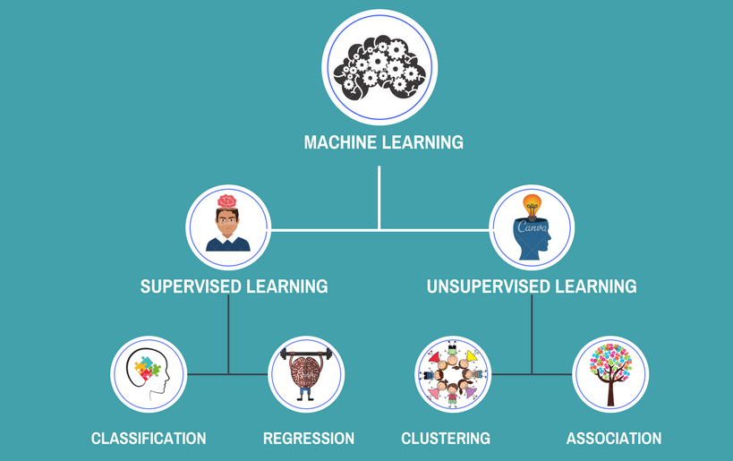

In this project, I developed an intelligent chatbot using the advanced LLAMA2 architecture, specifically fine-tuned on a custom diabetes dataset. The chatbot provides personalized assistance for managing diabetes, offering real-time advice on diet, exercise, medication, and lifestyle modifications tailored to individual needs. Its user-friendly interface and accurate natural language processing ensure a seamless experience, making it an invaluable tool for users looking to improve their health.
The Student Performance Prediction project focuses on developing a machine learning model that predicts student academic performance based on historical data. By analyzing various factors such as demographics and learning behaviors, the model provides personalized predictions, enabling students to set realistic goals and identify areas for improvement. The project involved collecting and preprocessing a comprehensive dataset, training the model using algorithms like linear regression and decision trees, and creating a user-friendly web interface with Flask. The application was deployed on AWS and Azure using Docker for containerization, along with CI/CD pipelines for seamless updates. Key technologies utilized include Scikit-learn for machine learning, Pandas and NumPy for data processing, and Flask for web development.
This project demonstrates the development of an advanced chatbot and API server using Ollama's Llama2 model, Streamlit, FastAPI, and Langchain. It evolves from a simple chatbot to a Retrieval-Augmented Generation (RAG) chatbot, enabling real-time information retrieval. The Streamlit interface offers a user-friendly experience, while the FastAPI server provides API routes for generating essays and poems. Enhanced with RAG models, the chatbot delivers more accurate responses by retrieving information dynamically from sources like Wikipedia. Future enhancements include deploying the chatbot on a cloud platform for broader access and improving Langchain agents for enhanced functionality.
The Global Terrorism Analysis project provides a comprehensive overview of the regions most affected by terrorism worldwide. By mapping high-risk areas and examining the trends and patterns of terrorist activities, the project aims to enhance understanding of the global terrorism landscape. Utilizing global terrorism databases and geospatial analysis techniques, this project visualizes incident statistics, including the frequency and types of attacks, and evaluates the socio-economic and political impacts on affected areas. Through advanced data visualization methods, the analysis offers valuable insights into the realities of terrorism, aiding researchers and security professionals in comprehending its complexities and implications.
News Article Recommendation System
The News Article Recommendation System personalizes the news experience by recommending articles tailored to each user’s interests. Using machine learning techniques like collaborative filtering and content-based filtering, the system analyzes user behavior and reading patterns to suggest relevant news in real-time. By combining these technologies, the system ensures users receive the most engaging and personalized content, enhancing their overall reading experience.

The Sentiment Analysis of Twitter Data project highlights advanced skills in natural language processing (NLP) and machine learning. This project involves text preprocessing, feature extraction, and sentiment classification, applying algorithms like Naive Bayes and Support Vector Machines (SVM) to categorize tweets into positive, negative, or neutral sentiments. It also demonstrates expertise in handling large datasets, optimizing model performance, and visualizing sentiment trends using tools such as Matplotlib and Seaborn. This project is a comprehensive showcase of data science and NLP skills, emphasizing the ability to analyze and interpret social media sentiment effectively.

This project showcases expertise in both supervised and unsupervised machine learning techniques. In the supervised learning section, models such as Linear Regression, Decision Trees, and Support Vector Machines (SVM) were applied to predict outcomes from labeled data. The unsupervised learning section involved clustering and dimensionality reduction techniques like K-Means Clustering and Principal Component Analysis (PCA) to uncover patterns in unlabeled datasets. This project emphasizes skills in model selection, training, evaluation, and optimization, demonstrating versatility in solving complex machine learning problems.